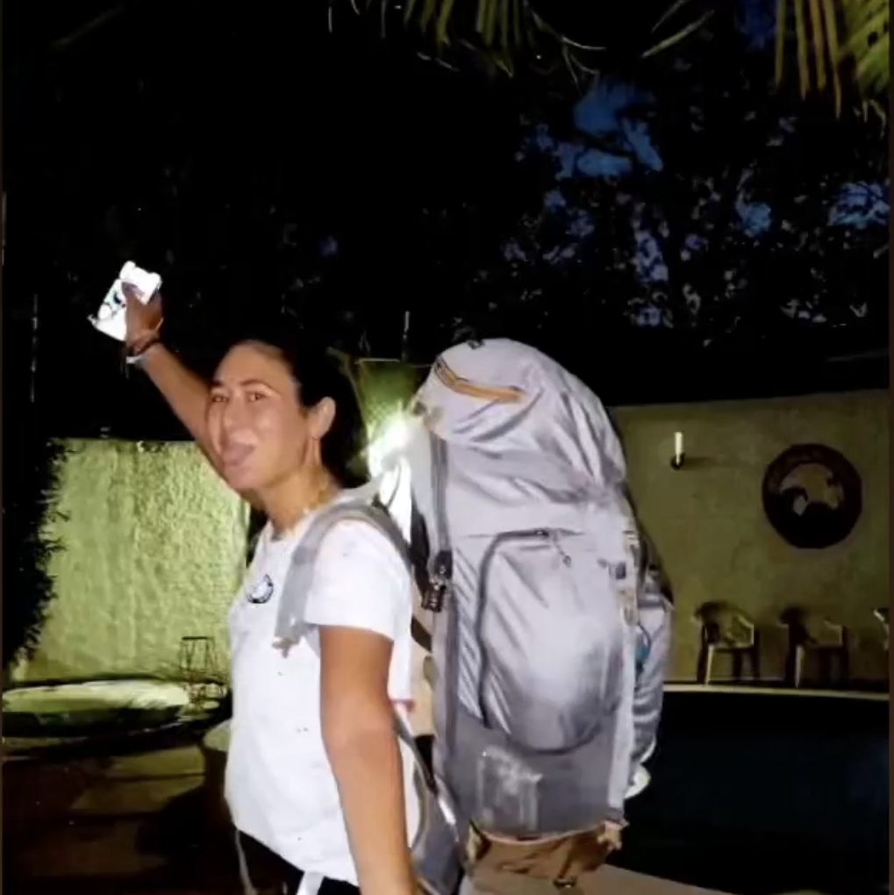
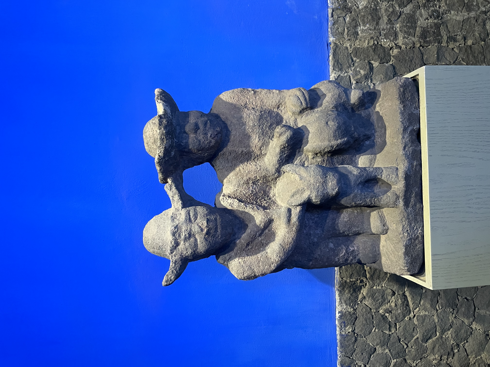

Hello there, I'm Emma
I am 22 years old girl with a very interesting story. From Europe to America, I have lived and studied in numerous countries enabling me to discover incredible people and cultures! As a true epicurian, I enjoy traveling, eating and contemplating beautiful things.
Learn More About MeTravels
Born in France, I have had the chance to travel all over the world with my family and friends. Equipped with my backpack, I have traveled throughout Europe's capitals, America's east coast, and more recently the lively Mexico. More than travels, I have had the opportunity to live in England, Canada, Spain and now back in France. If you are looking for a travel buddy, hit me up!
Discover my favorite city in MexicoFood

Along with my travels, I have had the chance to discover multiple types of foods and great restaurants. From grasshoppers to frog legs, I have tried everything! Living in Paris, I get to try out new restaurants in incredible settings all the time. My next objective is to create a food blog with all my food recommandations and ideas.
What is your favorite restaurant in Paris?Art
Last but not least, I have a true passion for art. Photography, painting, sculptures: I enjoy it all! It allows me to travel in my head and imagine alternative or past realities. Once again, I have the chance to live in a city that never sleeps with always a new exhibition to discover.
Check out this exhibition